The Wrangler NFR is the season-ending championship event for the PRCA and the Women’s Professional Rodeo Association and is widely acknowledged to be the world’s premier rodeo. Held every December since 1985 at the Thomas & Mack Center in Las Vegas, the Wrangler NFR is ProRodeo’s richest and most prestigious rodeo, and it showcases the very best cowboys, barrel racers and livestock in the world.
2019 WNFR Bareback Riders Profiles
Jake Brown: Jake Brown – Cleveland, Texas ($95,068) 5-time WNFR qualifier
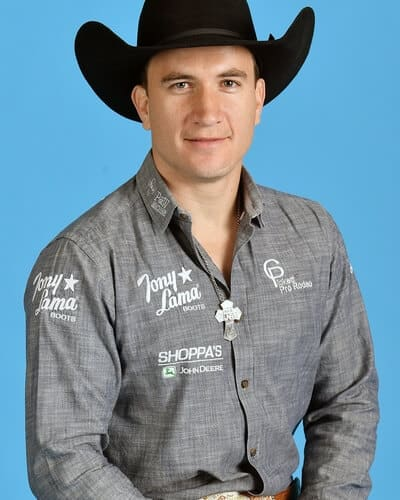
Jake has always wanted to be cowboy and one of the first goals he ever set was to qualify for the Wrangler National Finals Rodeo.
He enters his fifth NFR in ninth place with $95,048 in regular season earnings. The born and bred Texan first accomplished that goal in 2015 and hasn’t missed one since. His father, Paul Brown is a college rodeo coach. He has two older sisters that competed at play days and the family was nearly always at a rodeo or practicing for rodeos.
Tim O’Connell: Tim O’Connell – Zwingle, Iowa ($113,168) 6-time WNFR qualifier 3-time World Champion
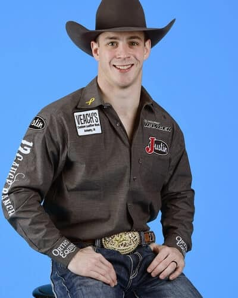
Three years in a row Tim O’Connell entered the Wrangler National Finals Rodeo in first place and left with a world title. But in 2018, he also left with an injury.
He scored 87-points on J Bar J’s bucking horse All Pink in the tenth round, but that came at a cost. He suffered a torn rotator cuff and torn labrum. While he didn’t think the injury was that bad at first, an MRI when he returned home showed the extent of the damage.
Dr. Tandy Freeman of the Justin Sportsmedicine Team recommended surgery which kept Tim out of action for six months. The upside of the forced inaction was Tim had more time to spend with his wife Sami and their son Hazen who turned one in March.
I enjoyed the six months off,” he said. “God blessed me with the time to spend with my wife and son, and it lit my fire to ride bucking horses again.
Trenten Montero: Trenten Montero – Winnemucca, Nev. ($80,757) First-time WNFR qualifier
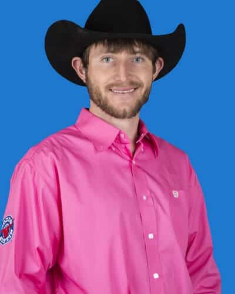
If Trenton Montero has any regrets about his first Wrangler National Finals Rodeo qualification, it’s that he won’t be able to participate in the grand entry.
There is nothing this ranch-raised cowboy would rather do than ride behind the Nevada flag as one of this year’s Wrangler National Finals Rodeo contestants, except get on a bucking horse and ride for a world championship. That is exactly what he is going to do and because bareback riding is the first event, those contestants don’t participate in the grand entry.
Taylor Broussard: Taylor Broussard – Estherwood, La. ($79,271) First-time WNFR qualifier
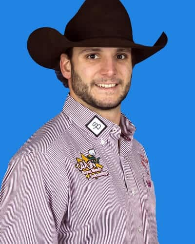
When a lot of rodeo contestants qualify for the Wrangler National Finals Rodeo, someone plans a celebration for them.
Taylor Broussard from Estherwood, Louisiana is having his own party on Facebook. Broussard’s family owns Acadia Crawfish Company, a gourmet line of spices and foods that reflects his Louisiana bayou heritage. When it was official, and he could announce that he got the 15th spot and was headed to compete on rodeo’s biggest stage he celebrated by giving away a starter kit to have the world’s best crawfish boil.
While he is giving others the opportunity to have a celebration, he and his wife Alishea and their families are doing a lot of celebrating as well. Taylor joined the PRCA in 2011. When he’s not rodeoing, he works at the family business. After finishing in the top 40 last year, he felt like he could compete with the best and had the confidence that he could be among the top 15 that ride for the gold buckle.
Tilden Hooper: Tilden Hooper – Carthage, Texas ($137,559) 6-time WNFR qualifier
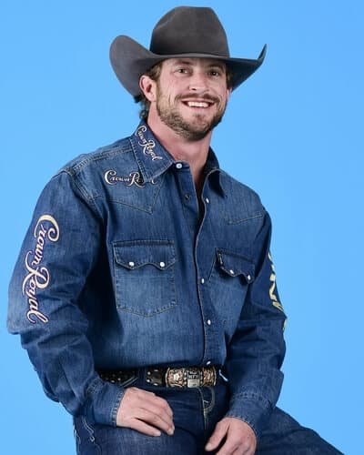
When Tilden Hooper won the bareback riding at the College National Finals Rodeo and the PRCA Rookie of the Year in 2007, everyone saw a bright future for the talented athlete.
He qualified for his first Wrangler National Finals Rodeo in 2008. Tilden finished that year 15th in the world standings. The next year he qualified again in 14th place.
In 2010, he tied for the world-record score when he rode Classic Pro Rodeo’s Big Tex for 94 points. But he missed the NFR.
A trip back to Las Vegas came in 2011 and again in 2014, when he finished the year in 11th place both times.
Clint Laye: Clint Laye – Cadogan, Alberta ($107,954) 2-time WNFR qualifier
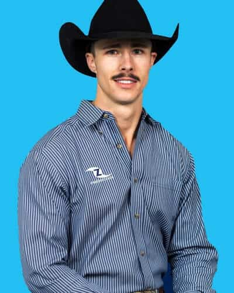
Clint Laye is returning to the Wrangler National Finals Rodeo after a three-year absence. The Canadian bareback rider qualified for his first trip to the Thomas & Mack Center in 2015, finished 10th in the world standings and placed in four of the 10 rounds.
Injuries kept him out of action for most of 2016, he finished in the Top 50 in 2017 and just missed returning to the WNFR last year when he finished 17th. He starts this year’s competition in eighth place with $107,954 in regular season earnings.
He started 2019 with a bang, winning the National Western Stock Show & Rodeo in Denver in January. Other big wins included the California Rodeo in Salinas; Union, Oregon; Jerome, Idaho; Moses Lake, Washington; and Mona, Utah, the last weekend of the regular rodeo season.
Ty Breuer: Ty Breuer – Mandan, N.D. ($88,699) 5–time WNFR qualifier
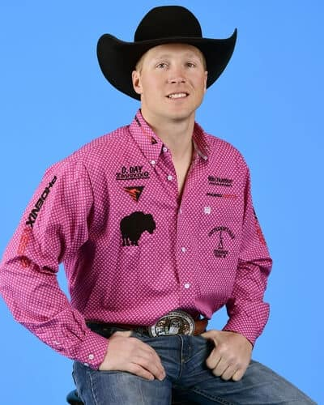
Ty Breuer had the best winter of his nine years as a PRCA bareback rider this year.
The Mandan, North Dakota resident won the Fort Worth Stock Show & Rodeo, then the Fiesta De Las Vaqueros Rodeo in Tucson, Arizona. He also got nearly $10,000 out of the San Antonio Stock Show Rodeo.
He continued winning and by the first of April had worked his way to third place in the world standings. Then things started to slow down. After the Fourth of July he was sixth with $86,113. He only added $2,586 through the rest of the season qualifying for his fifth Wrangler National Finals Rodeo in 12th place with $88,699.
Caleb Bennett: Caleb Bennett – Corvallis, Mont. ($110,973) 8-time WNFR qualifier
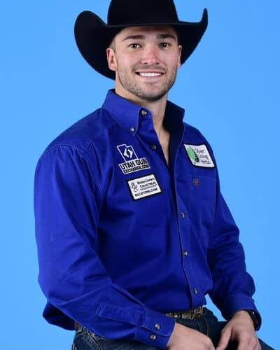
Caleb Bennett had high hopes for a gold buckle last year. He came to Las Vegas ranked 2nd, his best regular season finish in more than a decade of membership in the Professional Rodeo Cowboys Association.
He won one round at the 2018 WNFR and placed in three others – a respectable showing – but five other cowboys won enough in the 10 rounds to pass him. He finished the year ranked sixth in the world.
This year he starts rodeo’s championships in seventh with $110,973 earned in during the regular season. He kicked off 2019 with big wins in Texas at San Angelo and Austin, where he won first for the second year in a row. Other big wins came at the 100th anniversary Cody (Wyoming) Stampede over July 4 and at several Canadian rodeos.
Austin Foss: Austin Foss – Terrebonne, Ore. ($92,895) 4-time WNFR qualifier
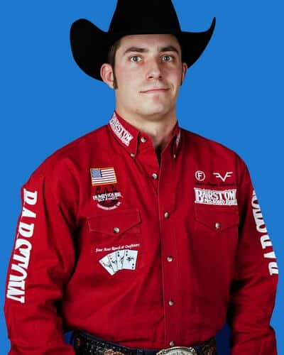
A bareback riding glove that gets wedged into the handle of a rigging is much more than a tool for Austin Foss of Terrebonne, Oregon.
The four-time Wrangler National Finals Rodeo qualifier customizes those gloves for his fellow competitors and uses his own glove to keep track of his rides and remind him to keep improving. Each time he is more than 80 points on a ride, he stamps an eight on his glove. He pulled out some old gloves and did some calculating. The glove he rode with in 2012 had about 20 of the eights on it. The next year it was 26. During this year’s regular season, he has been 80 points or better a total of 45 times and even got to put a nine on his glove for a ride that topped 90 this year.
That success during the regular season has Austin headed to the NFR in 11th place with $92,895. A native Oregonian, Austin won the state title in high school twice. He went on to Blue Mountain Community College in Pendleton and finished fifth at the College National Finals Rodeo in 2012, the same year he won the PRCA Rookie-of-the-Year title.
Steven Dent: Steven Dent – Mullen, Neb. ($93,799) 10-time WNFR qualifier
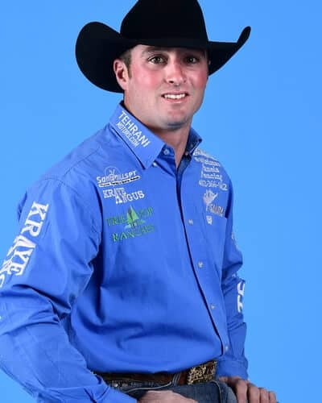
Growing up in the sandhills of Nebraska, there were three things Steven Dent learned a lot about, athletics, rodeo and ranching. He has been successful at all three and 2019 marks his tenth trip to the Wrangler National Finals Rodeo.
When he was a junior in high school,l he helped his eight-man football team win a state championship and led the state in rushing with 2,488 yards. The next year, he was a state wrestling champion.
All the while, he was learning about rodeo from his father who competed in the PRCA. His parents made their living ranching and he was taking that all in as well. Football scholarships held little interest to the high school athlete, but an offer to rodeo with world champion saddle bronc rider Tom Reeves at Ranger College in Texas was very appealing.
Steven also competes in saddle bronc riding as well as bareback riding. In fact, he finished the 2019 regular season ranked fifth in the all-around world championship standings and won the collegiate all-around title in 2007.
Clayton Biglow: Clayton Biglow – Clements, Calif. ($181,952) 4-time WNFR qualifier
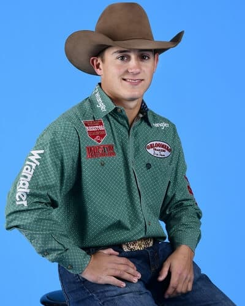
After the best season of his rodeo career, Clayton Biglow is headed to the Wrangler National Finals Rodeo for the fourth consecutive year – and this time he’s the frontrunner.
He racked up nearly $182,000 in regular-season earnings, including over $9,000 in the final month of the season to move him $5,741 ahead of four-time world champion Kaycee Feild.
Clayton has been among the top seven bareback riders in the world since 2016, just three years removed from winning the National High School Rodeo Association champion bareback rider and reserve all-around cowboy.
After his first NFR qualification in 2016, he finished the season in seventh place. In 2017, he was fifth and in 2018 he finished fourth. With that constant improvement, this year he is poised for a serious bid for a world championship.
Kaycee Feild: Kaycee Feild – Spanish Fork, Utah ($176,205) 10-time WNFR qualifier 4-time World Champion
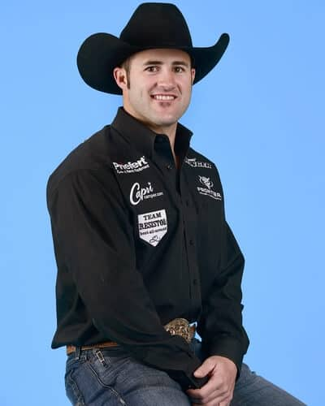
The path to his tenth Wrangler National Finals Rodeo has been a roller-coaster of ups and downs for four-time world champion bareback rider Kaycee Feild.
After finishing seventh at the end of 2018, Feild didn’t have an exceptional early season in 2019. By mid-February he was ranked 10th in the world championship standings.
Then came March. He started the month winning second place and $26,000 at The American in Arlington, Texas. Then he headed to one of his favorite rodeos – Rodeo Houston. There he won his fifth title in eight years and added more than $56,000 to his season earnings and passing the $100,000 mark. He finished the month by staying in Texas and winning $12,000 at Rodeo Austin and held the number one position with just under $116,000.
Richmond Champion: Richmond Champion – The Woodlands, Texas ($130,829) 5-time WNFR qualifier
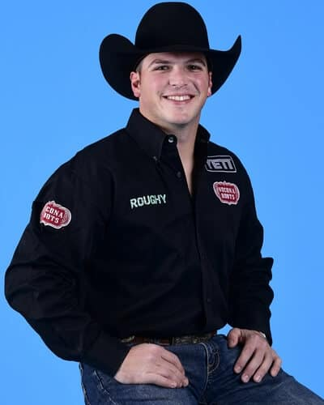
With parents that jobs that required frequent moves, Richmond Champion didn’t find his way to the rodeo arena until he was a teenager and had moved to Texas. The first-generation cowboy has truly found his passion and has qualified for his fifth Wrangler National Finals Rodeo in the bareback riding.
His mother competed in equestrian events in high school and had a love for horses that she passed on. The family is super competitive with everything they do and when Richmond’s older brother Doug was riding bareback horses, it wasn’t long until they both were getting on. Richmond had been riding bulls but said “I wasn’t very good at it,” so the transition to bareback was an easy decision.
Wanting to be the best he knew he needed to learn so he went to three bareback riding schools in six months. It paid off. He won the Texas High School Rodeo title, competed at the National High School Finals Rodeo and got a chance to further his education at Tarleton State University.
Orin Larsen: Orin Larsen – Inglis, Manitoba ($173,442) 5-time WNFR qualifier
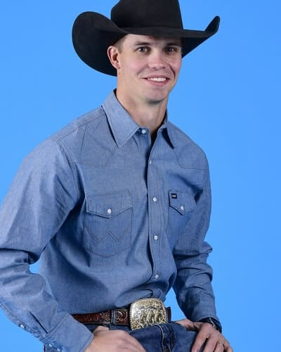
Orin Larsen is making a habit of qualifying for both the Canadian Finals Rodeo (CFR) and the Wrangler National Finals Rodeo. This is the fourth year in a row that he will compete at Canada’s championship rodeo in October and then head to Las Vegas for the WNFR in December.
The first year he qualified for the NFR was in 2015. But the native Canadian missed the CFR that year.
Orin’s first NFR qualification was special for the family as his older brother Tyrell competed in the saddle bronc riding. They were the first contestants from Manitoba to compete for rodeo’s championships.
They have made a lot of family memories. At last year’s CFR, Orin competed in bareback riding, Tyrell in saddle bronc riding and their youngest brother Kane qualified in the bull riding.
Tanner Aus: Tanner Aus – Granite Falls, Minn. ($81,595) 4-time WNFR qualifier
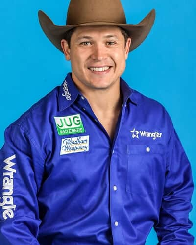
Rodeo fans would be hard pressed to find a cowboy that is more humble than Tanner Aus from Granite Falls, Minnesota.
He has won a lot of big rodeos, qualified for the Wrangler National Finals Rodeo four times and is on track to cross the $1 million mark. In fact, even though he is entering the NFR in 13th place with $81,595 he could cross that milestone in Las Vegas in December.
Each of the three previous years that he has been there, he has shared or won at least one round and placed in multiple rounds. He has career earnings of nearly $900,000 so it’s a pretty safe bet that he will accomplish that goal at this year’s NFR.
Courtesy of WranglerNetwork.com